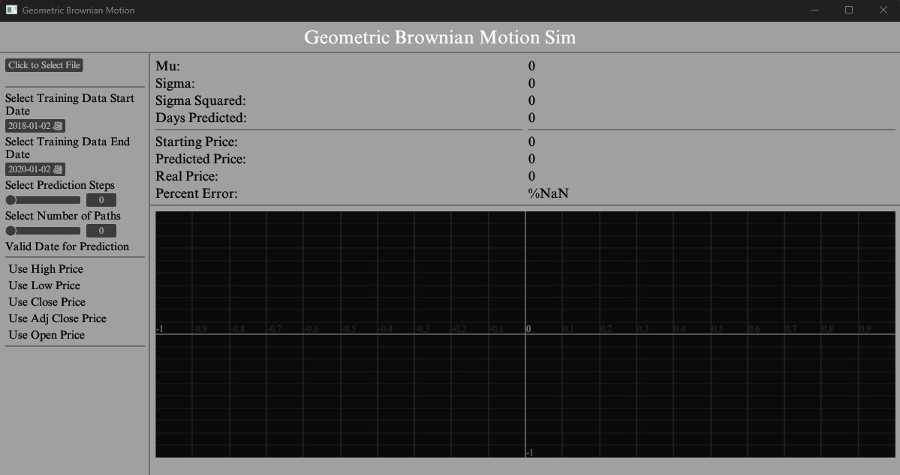
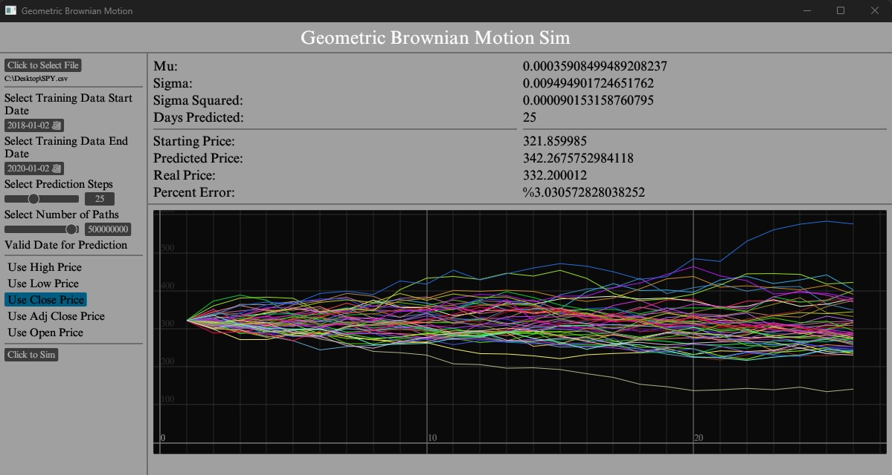

Since I had completed this project before in Python, I wanted to use Rust’s capabilities to expand my previous version. I wanted to create a standalone executable that I could drop financial data
from Yahoo into and run simulations on with no editing of source code. I started by using a Rust crate called EGUI, which I had previous experience using for another
project and decided it would be the perfect library to use as it can compile to a native or web app using WASM.
Figure 1: Main Application on Start

Figure 1 shows the application on start up with the various options presented to the user. The user can select a csv file for the simulation.
Once the user selects the file, specifies the training data start and end dates, chooses the prediction date, and the price type to use they can run the simulation.
Figure 2: Application Post Simulation

Figure 2 shows the application after a simulation has been completed. At the top the values used in the equation are displayed, along with the simulation's accuracy
and the real price recorded on the day and the predicted price from the simulation. Below that are 50 simulated price paths calculated with the equation and displayed.
To save performance only 50 are displayed while the above data is calculated from the user specified path number which can be between 1 and 1 billion. On my machine the
application takes approximately 5 seconds to complete a billion predicted prices, however since it's very CPU sensitive results on other machines will vary.
GBM function
pub fn gbm(file_path:&String,
t_start_date:NaiveDate,
t_end_date:NaiveDate,
selected_steps:&mut i64,
paths:&mut i64,
selected_price:&mut
Option < PriceType >,
predicted_price:&mut f64,
mu_hat:&mut f64,
sigma_hat:&mut f64,
sigma_sq_hat:&mut f64,
plotting_vecs:&mut Vec< Vec < f64 > >,
real_price:&mut f64,
step_size:&mut f64,
starting_price:&mut f64 )
{
let price_data = PriceData::read_csv(file_path, true);
let start_index = price_data.date
.iter()
.position(|s| {
*s == t_start_date
}).unwrap_or_default();
let end_index = price_data.date
.iter()
.position(|s| {
*s == t_end_date
}).unwrap_or_default();
let training_prices:&[f64];
match *selected_price{
Some(PriceType::Open) => training_prices =
&price_data.open[start_index..end_index],
Some(PriceType::Low) => training_prices =
&price_data.low[start_index..end_index],
Some(PriceType::Close) => training_prices =
&price_data.close[start_index..end_index],
Some(PriceType::High) => training_prices =
&price_data.high[start_index..end_index],
Some(PriceType::Adjclose) => training_prices =
&price_data.adj_close[start_index..end_index],
None => training_prices = &[],
}
let mu: f64 = (training_prices.iter()
.map(|&e| e.ln())
.zip(training_prices.iter().skip(1).map(|&p| p.ln()))
.map(|(e,p)| p - e)
.collect::< Vec< _ > >()
.iter()
.map(|e| *e)
.sum::< f64 >()) / (training_prices.len() - 1) as f64;
let sigma_sq: f64 = (training_prices.iter()
.map(|&e| e.ln())
.zip(training_prices.iter().skip(1).map(|&p| p.ln()))
.map(|(e,p)| p - e)
.collect::< Vec< _ >>()
.iter()
.map(|e| (*e - mu).powf(2.0))
.sum::< f64 >()) / (training_prices.len() - 2) as f64;
let sigma:f64 = sigma_sq.sqrt();//std_dev
let normalized_sigma:f64 = sigma * (*selected_steps as f64).sqrt();
let normalized_sigma_sq = normalized_sigma.sqrt();
let delta_t:f64 = 1.0/ *selected_steps as f64;
//starting simulation part
let plot_vecs_size:usize = 50;
//number of vectors that will be used for plotting purposes
let mut plot_vec:Vec< Vec < f64 > > = Vec::new();
let initial_price:f64 = training_prices[training_prices.len()-1];
//last value of the training data will be used as the first price
//that the simulation will build on
for _j in 0..plot_vecs_size{
let mut sim_vec:Vec = Vec::with_capacity(*selected_steps as usize + 1);
sim_vec.push(initial_price);
let mut i:usize = 1;
while i <= *selected_steps as usize{
let index:usize = i;
let normal = Normal::new(mu, delta_t.sqrt()).unwrap();
let rng_value:f64 = normal.sample(&mut rand::thread_rng());
let value:f64 = sim_vec[index - 1];
let operation:f64 = value * (E.powf(mu - (0.5 * normalized_sigma) *
delta_t + (normalized_sigma_sq * rng_value)));
i+=1;
sim_vec.push(operation);
}
plot_vec.push(sim_vec);
}
*plotting_vecs = plot_vec;
let predicted_days = *selected_steps;
//paralized calculation for the gbm final price
//(which is the only one that matters)
let optimized_vec_mutex =
Arc::new(Mutex::new(Vec::with_capacity(*paths as usize)));
let paths_per_thread =
(*paths as f64 / num_cpus::get() as f64).ceil() as usize;
//finds the number of cpu cores that the calculation can run on
//creates a specified chunk size
let handles: Vec< _ > = (0..num_cpus::get()).map(|i| {
let optimized_vec_mutex_cloned = optimized_vec_mutex.clone();
let start = i * paths_per_thread;
let end = usize::min(start + paths_per_thread, *paths as usize);
thread::spawn(move || {
//spawns thread for each cpu core to run the below calculations
let mut sim_vec: Vec< f64 > =
Vec::with_capacity(predicted_days as usize + 1);
sim_vec.push(initial_price);
let mut i: usize = 1;
while i < = predicted_days as usize {
let normal = Normal::new(mu, delta_t.sqrt()).unwrap();
let rng_value: f64 = normal.sample(&mut rand::thread_rng());
let value: f64 = sim_vec[i - 1];
let operation: f64 =
value * (E.powf(mu - (0.5 * normalized_sigma)
* delta_t + (normalized_sigma_sq * rng_value)));
sim_vec.push(operation);
i += 1;
}
let last_value = *sim_vec.last().unwrap();
let mut optimized_vec_guard =
optimized_vec_mutex_cloned.lock().unwrap();
for _j in start..end {
optimized_vec_guard.push(last_value);
}
})
}).collect();
for handle in handles {
handle.join().unwrap();
}
//setting the results to the Sim
//object variables so they're accessible on the main gui
let optimized_vec = optimized_vec_mutex.lock().unwrap().clone();
//collected vector with the final prices of the simulation
*predicted_price = (optimized_vec.iter().sum::< f64 >())
/ optimized_vec.len() as f64;
*mu_hat = mu;
*sigma_hat = sigma;
*sigma_sq_hat = sigma_sq;
*step_size = predicted_days as f64;
*starting_price = initial_price;
//getting actual price on predicted day
match *selected_price{
Some(PriceType::Open) => *real_price =
price_data.open[end_index+ *selected_steps as usize],
Some(PriceType::Low) => *real_price =
price_data.low[end_index+ *selected_steps as usize],
Some(PriceType::Close) => *real_price =
price_data.close[end_index+ *selected_steps as usize],
Some(PriceType::High) => *real_price =
price_data.high[end_index+ *selected_steps as usize],
Some(PriceType::Adjclose) => *real_price =
price_data.adj_close[end_index+ *selected_steps as usize],
None => *real_price = 0.0,
}
}
Thoughts
Overall this project was a great exercise in improving something I wrote in Python and extending the usefullness to a compiled language.